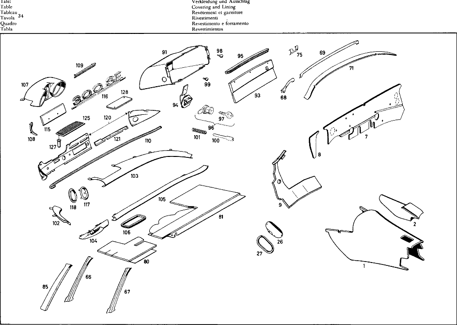

| № | Артикул | Название | Кол. | Примечание | Ограничение |
|---|---|---|---|---|---|
| 1 | A 111 682 50 07 | ШУМОИЗОЛЯЦИЯ | 1 | TRANSMISSION TUNNEL, FRONT | |
| 2 | A 112 682 51 07 | ШУМОИЗОЛЯЦИЯ | 1 | TRANSMISSION TUNNEL, FRONT | |
| 7 | A 111 682 63 20 | ИЗОЛЯЦИЯ | 1 | для COWL, ENGINE COMPARTMENT Рулевое управление: Влево | |
| 8 | A 111 682 65 20 | ИЗОЛЯЦИЯ | 1 | для COWL, ENGINE COMPARTMENT Рулевое управление: Влево | |
| 9 | A 110 680 09 25 | ШУМОИЗОЛЯЦИЯ | 1 | для FRONT PANEL Рулевое управление: Влево | |
| 21 | A 110 683 00 10 | Крышка | 2 | для SUBFRAME CUP | |
| 22 | A 001 988 44 78 | Скоба | 6 | для SUBFRAME CUP | |
| 26 | A 110 683 06 10 | КРЫШКА | 1 | для KICK\-DOWN LINKAGE Рулевое управление: Вправо | |
| 27 | A 110 683 02 98 | УПЛОТНИТЕЛЬ | 1 | для KICK\-DOWN LINKAGE Рулевое управление: Вправо | |
| 28 | A 110 683 03 36 | ПАНЕЛЬ | 2 | OVER REAR SHOCK ABSORBERS | |
| 30 | A 108 683 01 24 | НАКЛАДКА | 1 | IN LUGGAGE COMPARTMENT | |
| 31 | A 111 987 00 15 | ЗАГЛУШКА | 4 | для CAR JACK HOLDING DEVICE | |
| 32 | A 110 683 01 10 | КРЫШКА | 2 | TO COVER LUGGAGE COMPARTMENT | |
| 33 | A 110 683 02 10 | КРЫШКА | 2 | TO COVER REAR FLOOR | |
| 34 | A 110 683 01 98 | УПЛОТНИТЕЛЬ | 4 | ||
| 40 | A 112 680 53 40 | НАСТИЛ | 1 | для LEFT FRONT FLOOR Рулевое управление: ВлевоАвтоматическая коробка переключения передач | |
| 41 | A 111 680 64 40 | НАСТИЛ | 1 | для RIGHT FRONT FLOOR Рулевое управление: ВлевоАвтоматическая коробка переключения передач | |
| 42 | A 000 988 14 80 | Кнопка | 6 | ||
| 43 | A 136 988 09 81 | Кнопка-застежка | 6 | ||
| 44 | A 112 680 59 45 | НАСТИЛ | 1 | для TUNNEL, FRONT FLOOR Рулевое управление: ВлевоАвтоматическая коробка переключения передач | |
| 48 | A 111 680 55 44 | НАСТИЛ | 1 | для REAR FLOOR | |
| 49 | A 111 680 74 45 | НАСТИЛ | 1 | для CENTRAL TUNNEL IN THE REAR | |
| 51 | A 111 680 53 47 | НАСТИЛ | 1 | BELOW FRONT SEATS | |
| 53 | A 110 684 02 05 | НАСТИЛ | 1 | для LUGGAGE COMPARTMENT | |
| 54 | A 110 684 05 06 | НАСТИЛ | 1 | для LUGGAGE COMPARTMENT RECESS | |
| 55 | A 111 686 53 45 | НАКЛАДКА | 1 | для LEFT OUTSIDE SIDE MEMBER TOGETHER с 2 CAP, FRONT 111 899 50 08 2 CAP, REAR 111 899 51 08 | |
| 56 | A 111 686 51 20 | ПЛАНКА | 1 | ||
| 60 | A 111 686 51 36 | ПЛАНКА | 1 | для ENTRANCE, LEFT INSIDE | |
| 61 | A 111 686 51 28 | Обшивка | 1 | ||
| 63 | A 000 987 68 51 | УПЛОТН. РЕЗИНА | 2 | 1,867\-MM LONG ORDER BY THE METER BETWEEN MOULDINGS AND EMBELLISHERS | |
| 64 | A 000 983 24 87 | НАПОЛЬНОЕ ПОКРЫТИЕ | 2 | RUBBER, 4X97X1, 085\-MM для ENTRANCE | |
| 65 | A 111 680 53 43 | НАСТИЛ | 1 | для ENTRANCES | |
| 66 | A 111 688 51 39 | Обшивка | 1 | для WINDSHIELD PILLARS | |
| 80 | A 111 680 64 17 | ПАНЕЛЬ | 1 | BELOW INSTRUMENT PANEL Рулевое управление: Влево | |
| 81 | A 111 680 52 17 | ПАНЕЛЬ | 1 | BELOW INSTRUMENT PANEL Рулевое управление: Влево | |
| 85 | A 111 688 51 41 | Обшивка | 1 | LATERAL, OUTSIDE LEFT | |
| 90 | A 111 680 55 80 | Обшивка | 1 | PANEL, LATERAL LEFT с POCKET | |
| 91 | A 111 680 53 91 | ВЕЩЕВОЙ ЯЩИК | 1 | Рулевое управление: Влево | |
| 93 | A 111 680 51 98 | КРЫШКА ВЕЩ. ЯЩИКА | 1 | Рулевое управление: Влево | |
| 94 | A 111 680 50 51 | ШАРНИР | 2 | ||
| 95 | A 111 689 51 70 | РУЧКА | 1 | Рулевое управление: Влево | |
| 96 | A 110 689 00 01 | Замок | 1 | STATE LETTER AND NUMBER OF LOCK WHEN ORDERING | |
| 97 | A 000 766 10 06 | - Ключ | 2 | с THE LETTER "K" STATE LETTER AND NUMBER OF LOCK WHEN ORDERING [402] БОЛЬШЕ НЕ ПОСТАВЛЯЕТСЯ | |
| 98 | A 000 987 97 40 | Резиновый буфер | 1 | GLOVE COMPARTMENT LID STOP | |
| 99 | A 110 987 05 39 | Резиновое крепление | 1 | GLOVE COMPARTMENT LID STOP | |
| 100 | A 111 689 00 32 | СКОБА | 1 | TO BE SHORTENED BY 6 MM DURING ASSEMBLY GLOVE COMPARTMENT LID TO INSTRUMENT PANEL | |
| 101 | A 110 993 09 01 | пружина | 1 | GLOVE COMPARTMENT LID TO INSTRUMENT PANEL | |
| 102 | A 111 680 59 06 | Обшивка | 1 | Рулевое управление: Влево | |
| 103 | A 111 680 60 06 | Обшивка | 1 | Рулевое управление: Влево | |
| 104 | A 111 680 61 06 | Обшивка | 1 | Рулевое управление: Влево | |
| 105 | A 111 680 62 06 | Обшивка | 1 | RECHTS Рулевое управление: Влево | |
| 107 | A 111 680 57 79 | КОРПУС | 1 | TOGETHER с 1 SPEEDOMETER CASE 000 542 06 56 1 RUBBER RING 000 542 02 80 Рулевое управление: Влево | |
| 108 | A 111 689 52 72 | МОЛДИНГ | 1 | LEFT TOP AT INSTRUMENT PANEL Рулевое управление: Влево | |
| 109 | A 111 689 50 72 | МОЛДИНГ | 1 | ROP CENTER AT INSTRUMENT PANEL Рулевое управление: Влево | |
| 110 | A 111 680 51 71 | МОЛДИНГ | 1 | AT INSTRUMENT PANEL Рулевое управление: Влево | |
| 115 | A 112 680 05 96 | КРЫШКА | 1 | ||
| 116 | A 112 817 01 14 | TYPE DESIGNATION, | 1 | ||
| 117 | A 110 689 01 80 | Декоративная розетка | 1 | для STEERING LOCK OPENING | |
| 118 | A 110 689 00 98 | Резиновое кольцо | 1 | для STEERING LOCK OPENING | |
| 120 | A 111 680 53 87 | ПЕРЕДНЯЯ ПАНЕЛЬ | 1 | TWO\-PART Рулевое управление: Влево | |
| 121 | A 111 680 55 83 | Обшивка | 1 | Рулевое управление: Влево | |
| 125 | A 111 680 70 17 | ПАНЕЛЬ | 1 | для LOUDSPEAKER | |
| 127 | A 001 988 53 78 | СКОБА | 2 | ||
| 128 | A 111 680 50 67 | КОНЦЕВОЙ ЭЛЕМЕНТ | 1 | для LOUDSPEAKER OPENING | |
| A 000 983 30 91 | ПАПКА | 1 | BY THE METER для FRONT FLOOR, LEFT, 547X560\-MM BITUMINIZED FELT BOARD, 5 MM THICK | ||
| A 000 983 30 91 | ПАПКА | 1 | BY THE METER для FRONT FLOOR, RIGHT, 540X555\-MM BITUMINIZED FELT BOARD, 5 MM THICK | ||
| A 000 983 30 91 | ПАПКА | 1 | BY THE METER для TUNNEL, FRONT, 662X740\-MM BITUMINIZED FELT BOARD, 5 MM THICK | ||
| A 000 983 30 91 | ПАПКА | 1 | BY THE METER для FRONT PANEL, LEFT TOP 346X500\-MM BITUMINIZED FELT BOARD, 5 MM THICK Рулевое управление: Влево | ||
| A 000 983 30 91 | ПАПКА | 1 | BY THE METER для FRONT PANEL, LEFT TOP 112X223\-MM BITUMINIZED FELT BOARD, 5 MM THICK Рулевое управление: Влево | ||
| A 000 983 30 91 | ПАПКА | 1 | BY THE METER для FRONT PANEL, LEFT TOP 162X318\-MM BITUMINIZED FELT BOARD, 5 MM THICK Рулевое управление: Вправо | ||
| A 000 983 30 91 | ПАПКА | 1 | BY THE METER для FRONT PANEL, LEFT TOP 252X281\-MM BITUMINIZED FELT BOARD, 5 MM THICK Рулевое управление: Вправо | ||
| A 000 983 30 91 | ПАПКА | 1 | BY THE METER для FRONT PANEL, RIGHT 717X732\-MM BITUMINIZED FELT BOARD, 5 MM THICK Рулевое управление: Влево | ||
| A 000 983 30 91 | ПАПКА | 1 | BY THE METER для FRONT PANEL, RIGHT 481X574\-MM BITUMINIZED FELT BOARD, 5 MM THICK Рулевое управление: Вправо | ||
| A 000 983 30 91 | ПАПКА | 1 | BY THE METER для FRONT PANEL, LEFT, 570X617\-MM BITUMINIZED FELT BOARD, 5 MM THICK Рулевое управление: Вправо | ||
| A 000 983 30 91 | ПАПКА | 1 | BY THE METER для FRONT PANEL, RIGHT TOP, 354X708\-MM BITUMINIZED FELT BOARD, 5 MM THICK Рулевое управление: Вправо | ||
| A 000 983 30 91 | ПАПКА | 1 | BY THE METER для WATER TANK 110X267\-MM BITUMINIZED FELT BOARD, 5 MM THICK | ||
| A 000 983 30 91 | ПАПКА | 2 | BY THE METER для WATER TANK 312X653\-MM BITUMINIZED FELT BOARD, 5 MM THICK | ||
| A 000 983 30 91 | ПАПКА | 1 | BY THE METER для FRONT PANEL, LEFT BOTTOM, 493X510\-MM BITUMINIZED FELT BOARD, 5 MM THICK Рулевое управление: Влево | ||
| A 000 983 21 92 | ГРИБОК | 1 | BY THE METER для CENTRAL TUNNEL, REAR 160X571\-MM WAFFLE\-FACED FELT, 6 MM THICK | ||
| A 000 983 21 92 | ГРИБОК | 1 | BY THE METER для CENTRAL TUNNEL, REAR 171X408\-MM WAFFLE\-FACED FELT, 6 MM THICK | ||
| A 000 983 01 98 | ПОРОЛОН | 1 | BY THE METER AT TUNNEL, REAR FLOOR, FRONT, 160X570\-MM ESTER\-MOLTOPRENE, 10 MM THICK | ||
| A 000 983 22 91 | ПАПКА | 1 | BITUMINIZED BOARD, 2 MM THICK, 800X1,200 MM ORDER BY THE METER BETWEEN FRONT PANEL AND HEATER CASE | ||
| A 000 983 00 98 | ПОРОЛОН | 1 | ESTER\-MOLTOPRENE, 5 MM THICK, 1,000X1,000 MM ORDER BY THE METER BETWEEN FRONT PANEL AND HEATER CASE | ||
| A 111 682 61 20 | ИЗОЛЯЦИЯ | 1 | для COWL, ENGINE COMPARTMENT Рулевое управление: Влево | ||
| A 111 682 64 20 | ИЗОЛЯЦИЯ | 1 | для COWL, ENGINE COMPARTMENT Рулевое управление: Вправо | ||
| A 111 682 51 20 | ИЗОЛЯЦИЯ | 1 | для COWL, ENGINE COMPARTMENT Рулевое управление: Влево | ||
| A 111 682 62 20 | ИЗОЛЯЦИЯ | 1 | для COWL, ENGINE COMPARTMENT Рулевое управление: Влево | ||
| A 110 680 01 25 | ШУМОИЗОЛЯЦИЯ | 1 | для FRONT PANEL Рулевое управление: Влево | ||
| A 110 680 08 25 | ШУМОИЗОЛЯЦИЯ | 1 | для FRONT PANEL Рулевое управление: Вправо | ||
| N 007982 005205 | Шуруп | 2 | Рулевое управление: Вправо | ||
| A 000 990 17 42 | Диск | 2 | |||
| N 007983 004228 | Шуруп | 2 | |||
| N 900056 004506 | ПОТАЙНАЯ ШАЙБА | 2 | |||
| A 000 983 29 91 | ПАПКА | 2 | BY THE METER для FRONT PANEL, LATERAL BOTTOM, 410X472\-MM BITUMINIZED FELT BOARD, 3 MM THICK | ||
| A 000 983 29 91 | ПАПКА | 1 | BY THE METER для COWL, LEFT, IN ENGINE COMPARTMENT, 264X530\-MM BITUMINIZED FELT BOARD, 3 MM THICK Рулевое управление: Вправо | ||
| A 000 983 29 91 | ПАПКА | 1 | BY THE METER для COWL, RIGHT, IN ENGINE COMPARTMENT, 269X666\-MM BITUMINIZED FELT BOARD, 3 MM THICK Рулевое управление: Вправо | ||
| A 000 983 29 91 | ПАПКА | 2 | BY THE METER для REAR FLOOR, BOTTOM, 533X740\-MM BITUMINIZED FELT BOARD, 3 MM THICK | ||
| A 000 983 29 91 | ПАПКА | 2 | BY THE METER для REAR PANEL 465X708\-MM BITUMINIZED FELT BOARD, 3 MM THICK | ||
| A 000 983 29 91 | ПАПКА | 2 | BY THE METER для REAR PILLARS 430X460\-MM BITUMINIZED FELT BOARD, 3 MM THICK | ||
| A 000 983 29 91 | ПАПКА | 2 | BY THE METER для REAR PILLARS 75X125\-MM BITUMINIZED FELT BOARD, 3 MM THICK | ||
| A 000 983 29 91 | ПАПКА | 1 | BY THE METER OVER TRANSMISSION TUNNEL, 165X272\-MM BITUMINIZED FELT BOARD, 3 MM THICK | ||
| A 000 983 29 91 | ПАПКА | 1 | BY THE METER для CENTRAL TUNNEL 534X745\-MM BITUMINIZED FELT BOARD, 3 MM THICK | ||
| A 000 983 29 91 | ПАПКА | 2 | BY THE METER для LUGGAGE COMPARTMENT BEADS 85X640\-MM BITUMINIZED FELT BOARD, 4 MM THICK | ||
| A 000 983 29 91 | ПАПКА | 2 | BY THE METER для LUGGAGE COMPARTMENT BEADS 192X595\-MM BITUMINIZED FELT BOARD, 4 MM THICK | ||
| A 000 983 29 91 | ПАПКА | 2 | BY THE METER для LUGGAGE COMPARTMENT FLOOR 505X740\-MM BITUMINIZED FELT BOARD, 4 MM THICK | ||
| A 000 983 29 91 | ПАПКА | 2 | BY THE METER для LUGGAGE COMPARTMENT FLOOR 200X240\-MM BITUMINIZED FELT BOARD, 4 MM THICK | ||
| A 000 983 29 91 | ПАПКА | 1 | BY THE METER для LUGGAGE COMPARTMENT FLOOR 392X568\-MM BITUMINIZED FELT BOARD, 4 MM THICK | ||
| A 000 983 29 91 | ПАПКА | 1 | BY THE METER для LUGGAGE COMPARTMENT FLOOR 392X480\-MM BITUMINIZED FELT BOARD, 4 MM THICK | ||
| A 000 983 42 91 | ПАПКА | 2 | THICK, 1,000X1,200\-MM ORDER BY THE METER BELOW REAR SEAT | ||
| A 000 987 50 70 | резиновый профиль | 1 | 520\-MM LONG ORDER BY THE METER AT AIR BAFFLE CUT\-OUT | ||
| A 000 983 00 98 | ПОРОЛОН | 2 | BY THE METER AT TOP FRAME, LATERAL, 133X1,072\-MM MOLTOPRENE, 5 MM THICK | ||
| A 000 983 00 98 | ПОРОЛОН | 2 | BY THE METER AT REAR PILLARS, 320X625\-MM MOLTOPRENE, 5 MM THICK | ||
| A 000 983 00 98 | ПОРОЛОН | 1 | BY THE METER AT REAR WINDOW, BOTTOM, 75X1,150\-MM MOLTOPRENE, 5 MM THICK | ||
| A 000 983 00 98 | ПОРОЛОН | 1 | BY THE METER AT BAFFLE PLATE, 60X90\-MM MOLTOPRENE, 5 MM THICK | ||
| A 000 983 00 98 | ПОРОЛОН | 1 | BY THE METER AT TOP FRAME, FRONT, 193X1,225\-MM MOLTOPRENE, 5 MM THICK | ||
| A 000 983 00 98 | ПОРОЛОН | 1 | BY THE METER AT TOP FRAME, REAR, 130X990\-MM MOLTOPRENE, 5 MM THICK | ||
| A 000 983 00 98 | ПОРОЛОН | 1 | BY THE METER BETWEEN TOP FRAME AND TOP, REAR, 30X1,000\-MM MOLTOPRENE, 5 MM THICK | ||
| A 000 983 41 92 | ГРИБОК | 5 | BY THE METER JUTE FELT, 8 MM THICK для BOWS | ||
| A 110 683 00 28 | НАЛКАДКА СКОЛЬЗЯЩАЯ | 1 | для ACCELERATOR PEDAL Рулевое управление: Вправо | ||
| N 007981 003241 | Шуруп | 5 | SCREW, SHEET METAL для ACCELERATOR PEDAL Рулевое управление: Вправо | ||
| A 110 987 00 45 | КОЛПАЧОК | 1 | для OIL LEVEL CONTROL OF AUTOMATIC CLUTCH Рулевое управление: Вправо | ||
| A 112 683 00 10 | КРЫШКА | 1 | для TRANSMISSION TUNNEL Рулевое управление: Влево | ||
| A 112 683 00 98 | SEAL | 1 | для TRANSMISSION TUNNEL Рулевое управление: Влево | ||
| A 000 990 41 91 | ГАЙКОДЕРЖАТЕЛЬ | 5 | для TRANSMISSION TUNNEL Рулевое управление: Влево | ||
| N 000933 006016 | Винт | 5 | для TRANSMISSION TUNNEL; M6X12\-8.8 Рулевое управление: Влево | ||
| N 007513 006107 | Саморез | 3 | для TRANSMISSION TUNNEL Рулевое управление: Влево | ||
| A 112 683 02 10 | КРЫШКА | 1 | для TRANSMISSION TUNNEL Рулевое управление: Влево | ||
| A 112 683 01 98 | УПЛОТНИТЕЛЬ | 1 | для TRANSMISSION TUNNEL Рулевое управление: Влево | ||
| N 007976 006303 | Шуруп | 6 | SCREW, SHEET METAL для TRANSMISSION TUNNEL Рулевое управление: Влево | ||
| A 000 994 08 45 | предохранитель | 6 | для TRANSMISSION TUNNEL Рулевое управление: Влево | ||
| N 007513 006107 | Саморез | 4 | для TRANSMISSION TUNNEL Рулевое управление: Влево | ||
| A 000 994 23 45 | предохранитель | 6 | для KICK\-DOWN LINKAGE; B4.2 S=1.25\-2.0 Рулевое управление: Вправо | ||
| N 007981 004318 | Шуруп | 6 | SCREW, SHEET METAL для KICK\-DOWN LINKAGE; 4,2X9,5 Рулевое управление: Вправо | ||
| A 111 683 52 24 | НАКЛАДКА | 1 | IN LUGGAGE COMPARTMENT | ||
| A 112 683 02 24 | НАКЛАДКА | 1 | IN LUGGAGE COMPARTMENT | ||
| A 110 987 00 39 | Пробка | 14 | для WATER DRAIN HOLES IN FLOOR AND IN REAR PILLARS; 10mm | ||
| A 113 987 00 44 | Диск | 6 | для WATER DRAIN HOLES IN FLOOR AND IN REAR PILLARS; 20.5 MM | ||
| A 110 987 05 44 | Запорная шайба | 2 | IN DOOR PILLARS для WATER DRAIN HOLES; 32 MM | ||
| A 110 987 05 44 | Запорная шайба | 2 | IN SIDE MEMBER, REAR для WATER DRAIN HOLES; 32 MM | ||
| A 110 987 06 44 | Запорная шайба | 2 | для WATER DRAIN HOLES | ||
| A 000 990 12 22 | БОЛТ | 2 | TO LOCK THREADED HOLES IN TUNNEL, IF NO SAFETY BELTS ARE FITTED | ||
| A 000 990 13 22 | болт | 2 | TO LOCK THREADED HOLES IN TUNNEL, IF NO SAFETY BELTS ARE FITTED | ||
| A 000 990 13 22 | болт | 4 | TO LOCK THREADED HOLES IN TUNNEL, IF NO SAFETY BELTS ARE FITTED | ||
| A 000 987 04 15 | Пробка | 1 | TO LOCK HOLE IN WINDSHIELD WIPER MOTOR CUP Рулевое управление: Влево | ||
| A 110 987 10 44 | Диск | 1 | TO LOCK HOLE для TANK BREATHING LINES; 15.5 MM | ||
| A 000 987 01 44 | ДИСК | 1 | TO LOCK ANTENNA CABLE HOLE IN FRONT PANEL PILLAR | ||
| A 000 987 04 44 | ДИСК | 1 | TO LOCK THRU HOLE IN FRONT PANEL для LINE TO CLUTCH SLAVE CYLINDER | ||
| A 111 987 12 15 | ЗАГЛУШКА | 19 | TO LOCK THE HOLES | ||
| A 111 987 23 81 | GROMMET | 1 | TO PLUG HOLE IN FRONT PANEL Рулевое управление: Вправо | ||
| A 111 997 12 81 | втулка | 2 | для WATER DRAIN HOLES IN FLOOR AT RECESS | ||
| A 110 987 08 44 | Диск | 1 | TO LOCK HOLE IN FRONT PANEL, RIGHT; 18.5 MM Рулевое управление: Влево | ||
| A 110 987 12 44 | ДИСК | 2 | для HOLES IN REAR FLOOR | ||
| N 007981 004240 | Шуруп | 12 | |||
| A 000 989 51 20 | ГЕРМЕТИЗИРУЮЩИЙ СОСТАВ | NB | |||
| A 112 680 51 40 | RUG | 1 | для LEFT FRONT FLOOR Рулевое управление: ВлевоАвтоматическая коробка переключения передач | ||
| A 111 680 55 40 | НАСТИЛ | 1 | для LEFT FRONT FLOOR Рулевое управление: ВправоАвтоматическая коробка переключения передач | ||
| A 111 680 69 40 | НАСТИЛ | 1 | для LEFT FRONT FLOOR Рулевое управление: ВправоАвтоматическая коробка переключения передач | ||
| A 111 680 52 40 | НАСТИЛ | 1 | для RIGHT FRONT FLOOR Рулевое управление: ВлевоАвтоматическая коробка переключения передач | ||
| A 112 680 52 40 | RUG | 1 | для RIGHT FRONT FLOOR Рулевое управление: ВправоАвтоматическая коробка переключения передач | ||
| A 112 680 54 40 | НАСТИЛ | 1 | для RIGHT FRONT FLOOR Рулевое управление: ВправоАвтоматическая коробка переключения передач | ||
| N 007981 003242 | САМОРЕЗ | 6 | |||
| A 112 680 51 45 | НАСТИЛ | 1 | для TUNNEL, FRONT FLOOR Рулевое управление: ВлевоАвтоматическая коробка переключения передач | ||
| A 112 680 52 45 | НАСТИЛ | 1 | для TUNNEL, FRONT FLOOR Рулевое управление: ВправоАвтоматическая коробка переключения передач | ||
| A 112 680 58 45 | НАСТИЛ | 1 | для TUNNEL, FRONT FLOOR Рулевое управление: ВправоАвтоматическая коробка переключения передач | ||
| A 111 680 51 44 | НАСТИЛ | 1 | для REAR FLOOR | ||
| A 111 680 52 44 | НАСТИЛ | 1 | для REAR FLOOR | ||
| A 111 680 56 44 | НАСТИЛ | 1 | для REAR FLOOR | ||
| A 000 988 22 80 | КНОПКА | 4 | для REAR FLOOR | ||
| A 111 990 10 40 | Диск | 4 | для REAR FLOOR | ||
| A 136 988 09 81 | Кнопка-застежка | 4 | для REAR FLOOR | ||
| N 007981 003226 | Шуруп | 4 | SCREW, SHEET METAL для REAR FLOOR; 3,5X13 | ||
| A 111 680 54 45 | НАСТИЛ | 1 | для CENTRAL TUNNEL IN THE REAR | ||
| A 111 680 51 47 | НАСТИЛ | 1 | BELOW FRONT SEATS | ||
| A 111 680 52 47 | НАСТИЛ | 1 | BELOW FRONT SEATS | ||
| A 111 680 54 47 | НАСТИЛ | 1 | BELOW FRONT SEATS | ||
| A 110 684 01 05 | НАСТИЛ | 1 | для LUGGAGE COMPARTMENT | ||
| A 111 686 54 45 | НАКЛАДКА | 1 | для RIGHT OUTSIDE SIDE MEMBER TOGETHER с 2 CAP, FRONT 111 899 50 08 2 CAP, REAR 111 899 51 08 | ||
| N 007981 003241 | Шуруп | 22 | |||
| N 007981 004243 | Шуруп | 4 | |||
| A 111 686 52 20 | ПЛАНКА | 1 | |||
| N 007983 003249 | САМОРЕЗ | 14 | |||
| N 007981 003248 | САМОРЕЗ | 10 | |||
| N 007981 004243 | Шуруп | 8 | |||
| A 111 686 52 36 | ПЛАНКА | 1 | для ENTRANCE, RIGHT INSIDE | ||
| N 007983 003248 | Шуруп | 16 | |||
| N 007981 002203 | САМОРЕЗ | 2 | |||
| A 111 686 52 28 | Обшивка | 1 | RECHTS | ||
| N 007981 003241 | Шуруп | 22 | |||
| A 000 987 50 70 | резиновый профиль | 6 | ORDER BY THE METER LONG BETWEEN SIDE MEMBERS AND MOULDINGS | ||
| A 000 987 50 70 | резиновый профиль | 4 | ORDER BY THE METER LONG BETWEEN SIDE MEMBERS AND MOULDINGS | ||
| A 111 680 51 43 | НАСТИЛ | 1 | для ENTRANCES | ||
| A 111 680 52 43 | НАСТИЛ | 1 | для ENTRANCES | ||
| A 111 680 54 43 | НАСТИЛ | 1 | для ENTRANCES | ||
| A 111 688 52 39 | Обшивка | 1 | для WINDSHIELD PILLARS | ||
| A 000 983 12 92 | ГРИБОК | 2 | 10X2X150\-MM ORDER BY THE METER для WINDSHIELD PILLARS | ||
| N 007982 002212 | Шуруп | 6 | CHROMIUM PLATED, SHEET METAL | ||
| N 007983 002203 | Шуруп | 2 | COUNTERSUNK SCREW, CHROMIUM PLATED, SHEET METAL | ||
| A 111 680 65 17 | ПАНЕЛЬ | 1 | BELOW INSTRUMENT PANEL Рулевое управление: Вправо | ||
| A 111 680 56 17 | ПАНЕЛЬ | 1 | BELOW INSTRUMENT PANEL Рулевое управление: Вправо | ||
| A 000 983 02 84 | КОЖА | 1 | LEATHER Рулевое управление: Влево | ||
| A 000 983 02 84 | КОЖА | 1 | LEATHER Рулевое управление: Вправо | ||
| N 007981 003227 | Шуруп | 2 | |||
| N 009021 003105 | Шайба | 2 | Рулевое управление: Влево | ||
| A 111 687 50 11 | ПЛАСТИНА | 1 | BETWEEN CENTRAL PIECE BELOW WINDSHIELD AND ENGINE HOOD | ||
| A 000 987 18 40 | Резиновый буфер | 3 | для FRONT PANEL REINFORCEMENT PLATE Рулевое управление: Влево | ||
| N 007981 004200 | Шуруп | 1 | SCREW, SHEET METAL TO LOCK MOUNTING HOLE для GROUND CABLE | ||
| A 110 687 00 45 | КОЛПАЧОК | 1 | OVER KICK\-DOWN SWITCH Рулевое управление: ВправоАвтоматическая коробка переключения передач | ||
| A 111 688 52 41 | Обшивка | 1 | LATERAL, OUTSIDE RIGHT | ||
| N 007982 002212 | Шуруп | 12 | CHROMIUM PLATED, SHEET METAL | ||
| A 111 680 56 80 | Обшивка | 1 | PANEL, LATERAL RIGHT с POCKET Рулевое управление: Влево | ||
| A 111 680 60 80 | Обшивка | 1 | PANEL, LATERAL RIGHT LESS POCKET Рулевое управление: Вправо | ||
| N 007983 003260 | САМОРЕЗ | 2 | |||
| A 000 985 06 62 | Диск | 2 | |||
| A 111 680 54 91 | ВЕЩЕВОЙ ЯЩИК | 1 | Рулевое управление: Вправо | ||
| A 000 983 52 91 | ПАПКА | 1 | FELT BOARD, 2 MM THICK, 200X285 MM | ||
| A 000 983 02 84 | КОЖА | 2 | LEATHER | ||
| A 000 994 25 45 | Пружинная гайка самореза | 6 | 3.3MM | ||
| N 007983 004331 | Шуруп | 3 | |||
| N 007981 004338 | САМОРЕЗ | 2 | |||
| A 111 680 52 98 | КРЫШКА ВЕЩ. ЯЩИКА | 1 | Рулевое управление: Вправо | ||
| N 007995 003501 | САМОРЕЗ | 2 | COUNTERSUNK SCREW, CHROMIUM PLATED, WOOD | ||
| A 111 689 52 70 | РУЧКА | 1 | Рулевое управление: Вправо | ||
| N 007988 004110 | БОЛТ | 3 | COUNTERSUNK SCREW, CHROMIUM PLATED | ||
| N 007985 004126 | Винт | 4 | GLOVE COMPARTMENT LID TO INSTRUMENT PANEL; M4X12 | ||
| N 000137 004101 | Пружинная шайба | 4 | GLOVE COMPARTMENT LID TO INSTRUMENT PANEL | ||
| N 009021 004103 | Шайба | 4 | GLOVE COMPARTMENT LID TO INSTRUMENT PANEL | ||
| A 111 680 69 06 | Обшивка | 1 | Рулевое управление: Вправо | ||
| A 111 680 70 06 | Обшивка | 1 | Рулевое управление: Вправо | ||
| A 000 994 33 45 | предохранитель | 6 | для TOP PADS | ||
| N 007983 004326 | Шуруп | 11 | COUNTERSUNK SCREW, SHEET METAL для TOP PADS | ||
| A 111 680 67 06 | Обшивка | 1 | Рулевое управление: Вправо | ||
| A 111 680 66 06 | Обшивка | 1 | RECHTS Рулевое управление: Вправо | ||
| A 000 994 08 45 | предохранитель | 4 | BOTTOM PADS TO INSTRUMENT PANEL | ||
| N 007976 006204 | Шуруп | 4 | SCREW, SHEET METAL BOTTOM PADS TO INSTRUMENT PANEL | ||
| N 007981 003326 | Шуруп | 6 | SCREW, SHEET METAL BOTTOM PADS TO INSTRUMENT PANEL | ||
| N 007981 004223 | Шуруп | 2 | SCREW, SHEET METAL BOTTOM PADS TO INSTRUMENT PANEL | ||
| N 009021 006103 | Шайба | 2 | BOTTOM PADS TO INSTRUMENT PANEL | ||
| N 000127 006203 | Пружинное кольцо | 2 | BOTTOM PADS TO INSTRUMENT PANEL | ||
| N 000934 006006 | Гайка | 2 | BOTTOM PADS TO INSTRUMENT PANEL | ||
| A 000 987 23 44 | ДИСК | 4 | BOTTOM PADS TO INSTRUMENT PANEL | ||
| A 111 680 58 79 | КОРПУС | 1 | TOGETHER с 1 SPEEDOMETER CASE 000 542 06 56 1 RUBBER RING 000 542 02 80 Рулевое управление: Вправо | ||
| N 000125 005306 | ШАЙБА | 2 | |||
| N 000127 005203 | Пружинное кольцо | 2 | |||
| N 000934 005004 | Гайка | 2 | M5 | ||
| A 000 994 33 45 | предохранитель | 2 | |||
| N 007982 004213 | Шуруп | 2 | |||
| A 000 987 15 41 | КОЛЬЦО РЕЗИНОВОЕ | 2 | |||
| A 111 689 53 72 | МОЛДИНГ | 1 | RIGHT TOP AT INSTRUMENT PANEL Рулевое управление: Вправо | ||
| A 111 689 54 72 | МОЛДИНГ | 1 | RIGHT TOP AT INSTRUMENT PANEL Рулевое управление: Влево | ||
| A 111 689 55 72 | МОЛДИНГ | 1 | LEFT TOP AT INSTRUMENT PANEL Рулевое управление: Вправо | ||
| A 111 689 51 72 | МОЛДИНГ | 1 | TOP CENTER AT INSTRUMENT PANEL Рулевое управление: Вправо | ||
| A 000 990 07 50 | ГАЙКА | 6 | |||
| A 111 680 52 71 | МОЛДИНГ | 1 | AT INSTRUMENT PANEL Рулевое управление: Вправо | ||
| A 000 994 00 45 | Скоба | 2 | TYPE DESIGNATION TO COVER | ||
| A 111 994 03 45 | ПРЕДОХРАНИТЕЛЬ | 2 | |||
| A 111 680 54 87 | ПЕРЕДНЯЯ ПАНЕЛЬ | 1 | TWO\-PART Рулевое управление: Вправо | ||
| N 007982 003215 | Шуруп | 2 | |||
| A 111 680 56 83 | Обшивка | 1 | Рулевое управление: Вправо | ||
| N 007982 002219 | Шуруп | 4 | |||
| A 111 680 60 17 | ПАНЕЛЬ | 1 | для LOUDSPEAKER | ||
| A 000 994 42 45 | ПРЕДОХРАНИТЕЛЬ | 2 | |||
| N 007983 002232 | Шуруп | 2 | |||
| A 000 987 94 40 | Резиновый буфер | 2 |
Позиций: 263 · подписано на схемах: 64 · колесо — плавный зум в курсор, перетаскивание — пан, двойной клик — зум, клик по артикулу — скопировать.